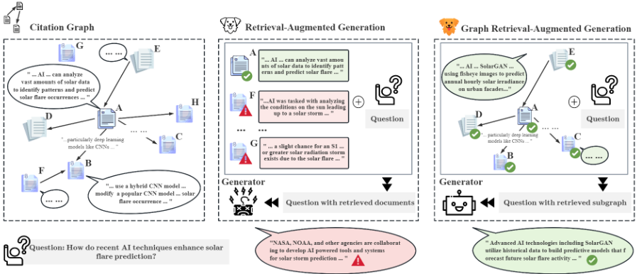
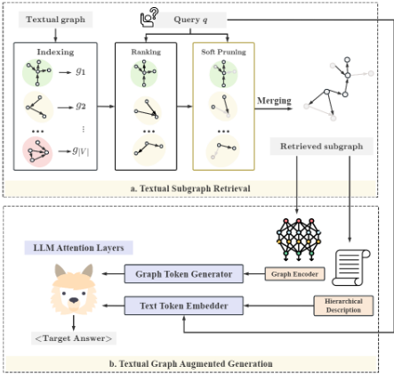
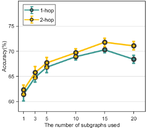
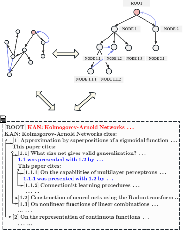
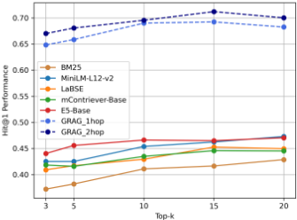

GRAG：图检索增强生成
传统 RAG 按文本相似度只检索单个孤立文档，无法处理引用网络、知识图谱等网络化文档。GRAG 将 RAG 扩展到文本图场景：检索端采用分治策略，先离线用 SentenceBERT 索引每个节点的 K-hop ego-graph，在线取 top-N 合并并用可学习的 soft pruning 掩蔽无关节点/边，以线性时间近似最优子图；生成端通过 text view（BFS+先序遍历把子图转成层级缩进文本作 hard prompt）与 graph view（GAT 编码拓扑经 MLP 对齐为 soft prompt）双视角注入 LLM。在 WebQSP 与 ExplaGraphs 上，冻结 LLM+GRAG 全面超过 LoRA 微调的 LLM（WebQSP Hit@1 0.7236，微调后仅增至 0.7275），幻觉评估中有效实体引用率 79% 高于 G-Retriever 的 71%。对团队而言，其子图检索与层级化上下文描述思路可直接借鉴到知识库问答的上下文组织，但完整方法需训练 GNN/MLP，超出团队不训练模型的边界。
Naive RAG 只按文本相似度检索单个孤立文档，无法利用文档间的网络结构（引用图、社交媒体、知识图谱等），导致检索覆盖与生成质量受限。核心挑战有二：一是如何高效检索与查询相关的文本子图（穷举子图搜索是 NP-hard 问题）；二是如何把子图的文本信息与拓扑信息及其相互依赖同时有效注入 LLM。
提出 GRAG 计算框架。检索端：基于'重要子图由重要节点及其部分邻域组成'的假设，将 NP-hard 的子图搜索分解为——离线用 SentenceBERT 将每个节点的 K-hop ego-graph 编码（mean pooling 得图嵌入）建索引，在线按 cosine 相似度取 top-N ego-graph，合并后用两个 MLP 学习与 query 距离相关的缩放因子做 soft pruning（距离越远标量越接近 0，自适应掩蔽无关节点/边的 token），整体将检索空间从 2^|V|+|E| 降到 |V|，实现线性复杂度。生成端：双视角注入——text view 用 BFS 建树 + 先序遍历 + 关系模板把 ego-graph 无损转成层级缩进文本描述作为 hard prompt；graph view 用 GAT 在相关性缩放因子控制下做 message passing 编码剪枝后的子图，经 MLP 对齐到 LLM 词向量空间作为 soft prompt；两者拼接后送入 Llama-2-7b 生成。
在 WebQSP 上，冻结 LLM + GRAG 的 Hit@1 为 0.7236，LoRA 微调后仅升至 0.7275，即 GRAG 无需微调 LLM 即在两个数据集所有指标上超过微调 LLM
仅微调 LLM（无检索）在 ExplaGraphs 上准确率从 33.94% 提升到 89.27%，但在 WebQSP 上 Hit@1 仅从 0.4148 升至 0.6186，图越大微调收益越小
跨数据集迁移：在 WebQSP 上训练的 GRAG 用于 ExplaGraphs，比 naive LLM 准确率提升 33.77%
幻觉人工评估（100 样本）：GRAG 输出引用的实体 79% 在图中有效，高于 MiniLM-L12-v2 的 62% 与 G-Retriever 的 71%
消融实验：去掉 graph encoder 后 WebQSP Hit@1 从 0.7275 降至 0.5835；去掉文本属性仅用 soft token 时 Hit@1 降至 0.4496（下降 38.2%）；不做 soft pruning 时性能甚至差于 w/o Retrieval 变体
2-hop ego-graph 一致优于 1-hop；检索 ego-graph 数量从 15 增至 20 时性能下降；超过 3-hop 的子图嵌入易出现 oversmoothing
无检索时更大模型未必更好：llama2-7b-chat-hf 在 ExplaGraphs 准确率 33.94%，略高于 llama2-13b-chat-hf 的 33.57%；WebQSP 上 13B Hit@1 0.4112 低于 7B 的 0.4148
与只检索孤立文档/节点/边、仅在文本域做检索的 RAG 方法（BM25、MiniLM、LaBSE、mContriever、E5 等）不同，GRAG 在检索阶段就直接以子图为检索单位引入拓扑信息；与 G-Retriever（检索节点/边后用 Prize-Collecting Steiner Tree 构子图、拓扑只在生成端以 soft prompt 引入）不同，GRAG 用分治 + ego-graph 离线索引 + 软剪枝以线性时间近似最优子图，并在生成端同时提供 hard prompt（层级文本描述）与 soft prompt（GNN 图嵌入）两个互补视角，实现文本与拓扑信息的联合传递。
相关度级别：high
命中能力域：3.1 上下文工程与记忆
理由：论文直接命中 3.1 域的'RAG/检索增强'与'结构化上下文组织'两项核心技术，且对应团队'知识库问答'这一明确工程场景：当知识库文档间存在引用、链接、依赖等网络关系时，纯文本相似度检索会丢失拓扑信息、多跳问题检索覆盖不足，GRAG 的子图检索正是针对该问题。其中 text view 的层级化子图描述（BFS+先序遍历+关系模板）与 ego-graph 检索排序均无需训练即可落地，是可直接复用的上下文组织模式；graph view 的 soft prompt 需训练 GNN/MLP，超出团队'把模型用好而非训练模型'的定位，属于需裁剪采用的部分。
建议动作：深入精读并做内部分享
arXiv:2405.16506v3 [cs.LG] 12 Jul 2025
Yuntong Hu, Zhihan Lei, Zheng Zhang, Bo Pan, Chen Ling, Liang Zhao
埃默里大学计算机科学系，美国佐治亚州亚特兰大市，邮编 30322
{yuntong.hu,liang.zhao}@emory.edu
朴素的检索增强生成（Retrieval-Augmented Generation, RAG）在检索过程中仅关注单个文档，因此在处理网络化文档方面存在不足，而这类文档在引文图、社交媒体和知识图谱等众多应用中十分普遍。为克服这一局限，我们提出了图检索增强生成（Graph Retrieval-Augmented Generation, GRAG），以应对检索文本子图以及将文本与拓扑联合信息融入大语言模型（Large Language Models, LLMs）以增强其生成能力方面的根本性挑战。为实现高效的文本子图检索，我们提出了一种新颖的分治策略，可在线性时间内检索出最优的子图结构。为实现图上下文感知的生成，我们通过两个互补的视角——文本视角与图视角——将文本图融入 LLMs，使 LLMs 能够更有效地理解并利用图上下文。在图推理基准测试（benchmark）上的大量实验表明，在需要对文本图进行多跳推理的场景中，我们的 GRAG 方法显著优于当前最先进的 RAG 方法。我们的数据集以及 GRAG 的代码可在 https://github.com/HuieL/GRAG 获取。
大语言模型（Large Language Models, LLMs）在包括基于图数据在内的多种推理任务中展现出了卓越的能力 (Hu et al., 2023b; Chen et al., 2024; Fatemi et al., 2023; Pan et al., 2024)。然而，由于训练数据的局限性以及缺乏实时知识，LLMs 自身难以避免事实性错误 (Mallen et al., 2023; Min et al., 2023)。检索增强生成（Retrieval-Augmented Generation, RAG）(Lewis et al., 2020; Guu et al., 2020; Ram et al., 2023; Gao et al., 2023; Yu et al., 2025) 将外部数据检索融入生成过程，已被广泛用于帮助 LLMs 从外部来源获取相关信息，从而生成更相关的答案并减少事实性错误 (Tang and Yang, 2024)。朴素的 RAG 方法仅关注单个文档，并基于文本相似度检索相关文档。然而，现实世界中的文档，例如社交媒体帖子、研究论文、知识条目和产品评论，通常并非孤立存在，而是以文本图（textual graph）的形式相互关联成网络 (He et al., 2023; Jin et al., 2023; Li et al., 2023; Hu et al., 2025)。重要的是，这类网络信息在检索相关文档以及提示 LLMs 进行文本生成时通常都至关重要 (Yang et al., 2024; Tang and Yang, 2024)。例如，研究论文构成引文图，因此当太阳物理学家想要了解太阳耀斑预测领域最先进的技术时，需要考虑论文之间的相互引用链接，以实现全面的检索覆盖，并深入理解该研究社区的技术演进（如图 1 所示）。类似地，当 LLMs 想要利用这些外部数据时，社交媒体帖子之间的社交互动、知识图谱中的实体关系以及产品评论系统中的购买关系都是不可或缺的。因此，问题在于：LLMs 在执行 RAG 时如何利用这类网络化文档？
为解决这一问题，我们提出了图检索增强生成（Graph Retrieval-Augmented Generation, GRAG），它超越了传统的 RAG 方法，将图上下文纳入其中。与在检索和生成阶段仅关注单个文档的 RAG 不同，GRAG 需要在这两个阶段都考虑文档之间的网络关联，这带来了两个根本性挑战：1）检索方面：如何高效地检索相关的文本子图？由于节点和边中的文本特征具有高维性，文本子图检索尤其具有挑战性。2）生成方面：如何将文本子图的文本与拓扑联合信息传递给 LLMs？生成阶段带来了额外的复杂性，因为它需要在保留文本信息与拓扑信息及其相互依赖关系的同时，有效地将网络化文档传递给 LLMs。

为应对这两个挑战，我们提出了 GRAG 的计算框架。具体而言，为实现高效的文本子图检索，我们提出了一种新的分治（divide-and-conquer）策略，将高维组合优化问题分解为：先检索最相关的自我图（ego-graphs），再通过图软剪枝机制对其进行精炼与合并。这为识别最相关的文本子图结构提供了一种近似解，从而避免了穷举搜索所有子图的 NP-hard 问题（Johnson and Garey, 1979）。为将检索到的文本子图融入 LLMs，我们通过硬提示（hard prompts，即文本 token）向 LLM 提供文本视角，并通过软提示（soft prompts，即图 token）提供图视角。检索到的文本子图由我们提出的图算法转换为层次化的文本描述以构成硬提示，从而在文本中编码拓扑信息。软提示则通过图编码器（graph encoders）直接编码图的拓扑信息来生成，并将文本信息编码为图中的节点/边属性。最终，生成过程由硬提示与软提示共同引导，使 LLM 能够更深入地理解实体之间的关系，从而产生与底层文本图上下文高度对齐的响应。
在多跳图推理任务上的实证结果表明，在图推理场景中，我们的 GRAG 方法显著优于基于 RAG 的检索器以及 LLM 基线。特别地，结合 GRAG 的冻结 LLM（Frozen LLM）在所有任务上均优于微调后的 LLM。
本文的主要贡献总结如下：
与传统的微调方法不同——例如需要更新模型参数的低秩适配（LoRA）(Hu et al., 2021)——提示微调（prompt tuning）专注于修改输入，以更有效地引导模型的响应 (Liu et al., 2023; Jia et al., 2022)。AutoPrompt (Shin et al., 2020) 和 Prompt Tuning (Lester et al., 2021) 等方法引入了无需人工干预即可构建有效提示的自动化技术。特别地，Lester 等人提出直接将软提示作为嵌入进行学习，从而在保留模型原始参数的同时实现面向特定任务的适配。在此基础上，近期研究探索了在多模态场景中对提示嵌入进行适配 (Zhou et al., 2022; Khattak et al., 2023; Yang et al., 2022; Ge et al., 2023)，为通过提示微调将 LLM 集成到多样化领域提供了一种灵活的机制。
一方面，LLM 的文本嵌入能力有助于对文本形式的节点与边属性进行编码，这直接有利于分类任务（Hu et al., 2023b; Chen et al., 2023, 2024）和知识图谱构建（Trajanoska et al., 2023; Yao et al., 2023）。另一方面，LLM 的上下文推理能力则有助于图推理（Wang et al., 2024; Jiang et al., 2023; Luo et al., 2023）以及零样本场景下的图问答（Baek et al., 2023; Hu et al., 2023a）。尽管在大规模文本语料上的训练使 LLM 能够对简单图结构形成稳健的语言理解，但这并不能使其天然具备理解或推理复杂图结构化数据的能力，因为文本数据缺乏显式的拓扑信息（Huang et al., 2023; Chen et al., 2024; Merrer and Trédan, 2024）。近来，图提示微调（graph prompt tuning）（Perozzi et al., 2024; Tian et al., 2024）已成为一种强大的工具，可帮助 LLM 处理并理解拓扑信息。
Yasunaga 等人检索相关节点，并构建一个包含问答（QA）上下文与相关节点的联合图。Kang 等人和 Kim 等人则专注于检索三元组而非单个节点和边，以捕获更复杂的关系数据。特别地，一些检索问题可以通过推理链来解决，这类问题可简化为检索从问题到目标实体的路径（Lo and Lim, 2023; Choudhary and Reddy, 2023）。Edge 等人利用社区检测算法将图划分为若干社区，然后检索并聚合相关社区，以生成针对查询的最终答案。Li 等人通过同时融入文本信息和拓扑信息来增强检索过程，使模型能够更好地捕获图结构化数据中的结构关系。
文本图（Textual Graphs）是由具有文本属性的节点和边构成的图，可形式化定义为 G = ( V, E, { T n } n ∈ V , { T e } e ∈ E ) 。V 和 E 分别表示节点集和边集。T n 和 T e 表示图中相应节点和边的自然语言属性。
文本子图（Textual Subgraphs）是文本图中的子图结构。例如，对于节点集 V 和边集 E 均为有限集的图 G，其子图集为 S ( G ) = { g = ( V ′ , E ′ , { T n } n ∈ V ′ , { T e } e ∈ E ′ ) | V ′ ∈ P ( V ) , E ′ ∈ P ( E ) } ，其中 P ( V ) 和 P ( E ) 分别表示 V 和 E 的幂集。
图检索增强生成（Graph Retrieval Augmented Generation, GRAG）旨在将图上下文融入检索与生成两个阶段，以提升生成内容与文本图中所嵌入知识的相关性。给定针对文本图 G 的特定查询 q，存在一个最优文本子图 ˆ g ∈ S ( G )，它能够引导大语言模型（LLM）生成符合预期的答案，其中 S ( G ) 表示 G 的所有子图构成的集合。GRAG 的目标是检索出最优子图 ˆ g，并将其信息融入由 θ 参数化的 LLM θ 中，从而增强生成过程。形式化地，最终输出序列 Y 的概率分布定义如下：
其中 y <i 与 [ q, ˆ g ] 分别表示前缀 token，以及查询与最优子图信息的拼接。
概述。在本节中，我们介绍我们的 GRAG 解决方案。如图 2(a) 所示，为应对文本子图检索的挑战，我们提出了一种分治策略，该策略基于如下假设：重要子图由重要节点及其部分邻居构成。具体而言，我们搜索重要的自我图（ego-graph）。随后，我们合并最相关的前 topN 个自我图，并执行软剪枝操作以降低冗余节点和边的影响，从而得到近似最优的子图结构。与总搜索空间为 2^{|V|+|E|} 的直接子图搜索相比，我们这种“先检索后剪枝”的方法通过将检索空间限制为仅 |V| 个自我图来保证效率。为应对同时保留文本信息与拓扑信息的挑战，如图 2(b) 所示，我们从两个互补的视角来处理文本图：1）文本图的图视角（graph view），将文本图的表示学习为软提示（soft prompts），以保留文本之间的连接方式；2）文本图的文本视角（text view），将文本图转换为层次化的文本描述作为硬提示（hard prompts），以保留连接是如何被叙述的。接下来，我们将在后续小节中详细描述检索与生成过程。

给定一个文本图 G，需要检索出最优的文本子图 ˆ g ∈ S ( G ) 以最大化生成质量。形式化地，设 f ( · ) 为基于检索到的子图评估生成质量的函数，即 max ˆ g f (ˆ g )，该问题是 NP-hard 的；为了绕开这一难题，我们对检索到的文本子图采取另一种理解方式。检索到的文本子图可以被视为若干重要节点的（部分）邻域的并集，这可以形式化为：
其中，G [ N ∗ K ( v )] ∈ S ( G ) 表示由节点 v 及其被选中的 K 跳邻居导出的子图，即 N ∗ K ( v ) ⊆ N K ( v )，V key 表示构成 ˆ g 骨干的关键节点集合。
因此，我们不再直接求解原始的 NP-hard 问题，而是通过一种新颖的分治策略并借助如下近似来处理公式 2 中的问题：
因此，求解原始问题转化为选取排名靠前的关键节点以构成 V key，这一过程具有线性时间复杂度。更重要的是，我们可以通过先以离线方式对每个节点周围的邻域进行编码来进一步加速该过程。在文本子图检索过程中，我们可以快速索引出一个有潜力的候选子图池 { G [ N K ( v )] }，并从中进一步对排名靠前的子图进行排序、保留和精炼。在此之后，一个可学习的剪枝器会将选出的邻域裁剪为与查询相关且对任务最有益的子图，即 { G [ N K ( v )] } → { G [ N ∗ K ( v )] } 。
文本子图索引。对于任意节点 v，G [ N K ( v )] 等价于以 v 为中心的 K 跳自我图（ego-graph）。因此，G 中的每个 K 跳 ego-graph 都被赋予一个唯一标识符，随后被池化为一个图嵌入。具体而言，我们利用预训练语言模型（PLM）1 将节点和边的文本属性转换为嵌入。然后，我们对这些嵌入应用平均池化操作，得到每个子图 g ∈ S ( G ) 的图嵌入，记为 z g ∈ R d，其中 d 表示图嵌入的维度：
其中，V g 和 E g 分别表示子图 g 的节点集合和边集合。所有已索引的嵌入都会被存储起来，用于后续的检索过程。
文本子图排序。采用相同的 PLM 编码器对查询进行编码：
然后，我们计算查询与每个 K 跳 ego-graph 之间的语义相关性，以找出最相关的前 N 个子图：
1 使用 SentenceBERT (Reimers and Gurevych, 2019) 对查询和文本属性进行编码。
其中，cos ( · , · ) 表示余弦相似度函数。子集 S N ( G ) ⊆ S ( G ) 包含与查询语义相关性最高的 N 个子图。
文本子图软剪枝（Textual Subgraph Soft Pruning）。尽管我们检索到了相关子图，但仍可能存在一些无关的节点和边，它们会对最终生成产生负面影响。因此，我们采用一种软剪枝方法来最小化这些无关实体的影响。具体而言，我们使用两个多层感知机（MLPs），基于节点和边与查询之间的距离来学习一个缩放因子，如下所示：
其中，⊖ 表示用于度量逐元素距离的算子。该标量会自适应地掩蔽节点和边的部分 token。节点或边距离查询越远，其标量值就越接近 0，从而有效地掩蔽这些节点或边。最后，我们合并 S N ( G ) 中经过自适应掩蔽的子图，得到针对查询 q 量身定制的最优子图结构 ˆ g ，整个过程以线性复杂度实现。
在本节中，我们介绍为大语言模型（LLM）提供文本图两种互补视角的方法：文本视角（text view）和图视角（graph view）。
文本图的文本视角。LLM 在图上展现出推理能力，尤其是在解读以层次结构（如树结构）组织的文本时（Saad-Falcon et al., 2023）。虽然以层次结构表示检索到的文本子图有助于保留拓扑信息，但如何自动化这一转换仍是一个开放性挑战。在此，我们提出一种新颖的算法，利用图遍历和树遍历来完成这一转换。自我中心图（ego-graph）与树的区别在于，除了层次树结构中典型的父子连接之外，还存在连接同一层内节点或跨多个层次的额外边。为了克服这一挑战，我们将每个检索到的自我中心图拆分为两部分，记为 g = T g ∪ E g，其中 T g 表示一个偏序集，它构成一棵以自我中心节点（ego node）为根的树，而 E g 是由未包含在该树中的边组成的边集。我们在每个自我中心图上利用广度优先搜索（BFS）来找到其 T g，随后便可轻松得到 E g。之后，我们对 T g 执行前序遍历，并借助关系模板将所访问节点和边的文本附加进去。然后，我们将 E g 中三元组的文本插入到当前的层次化描述中。文本图的最终描述记为 D g，它以层次结构同时保留了文本信息和拓扑信息，使得 K 跳自我中心图与文本描述之间能够进行无损转换。这种相互转换的一个示例见附录 A.1。最后，我们将查询与文本子图层次化描述的拼接（即 [ q, D g ]）作为硬提示（hard prompt）提供给 LLM。
文本图的图视角。我们利用图神经网络（GNN）来编码图的拓扑信息。为了在编码过程中最小化无关实体对生成的影响，我们提出将软剪枝子图（soft pruned subgraph）的表示学习为软提示（soft prompt）。该策略通过学习到的相关性缩放因子（α）来控制图编码器 GNN Φ 中的消息传递。然后，使用一个 MLP ϕ 3 将图嵌入与 LLM 的 token 对齐。这种方法在 GNN Φ 内实现了受控的消息传递，由节点和边与查询之间的相关性引导，如下所示：
其中，u ∈ {N ( v ) ∪ v }，h (0) u = z n，e uv = z uv；N ( v ) 表示节点 v 的邻居节点集合，h (l - 1) u 是来自上一层的节点特征，e uv 表示连接节点 u 和 v 的边的属性，α u 和 α uv 为缩放因子。
生成阶段。生成过程由检索到的子图 ˆ g 和原始查询 q 引导。这两种提示的模态并不相同。因此，为了弥合图嵌入与大语言模型（LLM）θ 的文本向量空间之间的差距，我们使用 MLP ϕ 3 对图嵌入进行相应的对齐，如下所示：
其中，d LLM 表示 LLM θ 中文本向量的维度。h ˆ g 聚合了拓扑信息，以在生成阶段增强 LLM θ 对图结构的感知。我们利用 LLM θ 的文本嵌入器将硬提示 [ q, D g ] 转换为文本嵌入 h T 。最终的生成结果 Y 由下式给出：
其中，[ · ; · ] 表示在将 token 嵌入送入 LLM θ 的 Transformer 层之前对它们进行的拼接。
数据集。我们在 GraphQA 基准测试 (He et al., 2024) 上开展实验。该数据集的统计信息如表 1 所示。每个文本图对应至少一个问答对。回答问题需要 LLM 理解该图的上下文。WebQSP (Yih et al., 2016; Luo et al., 2023) 是一个大规模的多跳知识图谱问答数据集，而 ExplaGraphs (Saha et al., 2021) 则是一个专注于预测辩论中立场的常识推理数据集。
| Dataset | WebQSP | ExplaGraphs |
|---|---|---|
| # Graphs | 4700 | 2766 |
| # Nodes | 1370.89 | 5.17 |
| # Edges | 4252.37 | 4.25 |
| # Tokens | 100627 | 1396 |
| Dataset | WebQSP | ExplaGraphs |
评估指标。对于大规模数据集 WebQSP，我们采用 F1 Score、Hit@1 和 Recall 指标来全面评估模型的性能。对于专注于常识推理的 ExplaGraphs，我们采用 Accuracy (Acc) 作为主要指标。
对比方法。为了验证 GRAG 的有效性，我们在图多跳推理任务上将其性能与广泛使用的检索器进行比较。我们将 GRAG 与使用不同检索器的检索增强生成（RAG）进行比较：BM25 (Robertson et al., 2009)、MiniLM-L12-v2 (Reimers and Gurevych, 2019)、LaBSE (Feng et al., 2022)、mContriever (Izacard et al., 2021)、E5 (Wang et al., 2022) 以及 G-Retriever (He et al., 2024)。对比检索器的详细介绍见附录 A.2。此外，我们建立了两个不使用检索得到的外部知识的 LLM 基线：（1）冻结的 LLM，以及（2）使用 LoRA (Hu et al., 2021) 微调的 LLM。所使用的 LLM 为 Llama2-7b 模型 (Touvron et al., 2023)。详细的实验设置见附录 A.3。
表 2 报告了各数据集上的总体结果。我们将 GRAG 的性能与 5.1 节中介绍的对比检索器和基线进行了比较，并得出以下关键观察。
GRAG 优于 RAG 和 LLM 基线。值得注意的是，GRAG 在无需对 LLM 进行微调的情况下，在两个数据集的所有指标上都显著优于微调后的 LLM。当采用 GRAG 时，微调仅能带来微小的性能提升，这在 WebQSP 数据集上的有限改进中得到了印证，Hit@1 指标仅从 0.7236 提升至 0.7275。这表明，与单纯的微调相比，GRAG 是增强 LLM 图推理能力的一种更有效的策略。这可以显著降低为图相关任务训练 LLM 的成本。
软剪枝提升 LLM 在图相关任务中的性能。当图中的所有文本信息都被整合进提示（prompt）时，LLM 表现出欠佳的性能，即使在图规模较小的 ExplaGraphs 数据集上也是如此。这凸显了实施检索操作以减轻图中冗余信息负面影响的迫切需要。值得注意的是，微调在小型图上进行推理时能显著提升 LLM 的性能，在 ExplaGraphs 上准确率从 33.94% 显著提升至 89.27%。然而，微调的收益随着图规模的增大而递减，WebQSP 上的 Hit@1 仅从 0.4148 提升至 0.6186。
GRAG 展现出强大的可迁移性，能够将学习到的文本图编码能力跨数据集迁移。如表 3 所示，当在大型数据集上训练后，GRAG 可以利用训练好的模型提升在较小数据集上的生成效果。值得注意的是，在 WebQSP 上训练的 GRAG 在 ExplaGraphs 上的表现优于朴素 LLM，准确率提升了 33.77%。
在无检索的情况下，更大的 LLM 在图相关任务中不一定优于更小的模型。除了 GRAG 与 RAG 模型的性能比较之外，我们还评估了 LLM 规模对图相关任务的影响，具体考察了 Llama 模型的 7B 和 13B 版本。我们的研究结果表明，更大的 LLM 的表现可能不如较小的模型。在缺乏检索技术的情况下，更大的 LLM 未能在这些任务中取得更优的性能。例如，llama2-7b-chat-hf 模型在 ExplaGraphs 数据集的常识推理任务上达到了 33.94% 的准确率，略优于准确率为 33.57% 的 llama2-13b-chat-hf 模型。在 WebQSP 数据集上也观察到类似的趋势，13B 模型的 Hit@1 得分为 0.4112，略低于 7B 模型取得的 0.4148。
| Model. | Prompt tuning. | Fine-tuning. | WebQSP.F 1 Score ↑ | WebQSP.Hit@1 ↑ | WebQSP.Recall ↑ | ExplaGraphs.Acc ↑ |
|---|---|---|---|---|---|---|
| Baselines | Baselines | Baselines | Baselines | Baselines | Baselines | Baselines |
| LLMonly LLM LoRA | ✗ ✗ | ✗ ✓ | 0.2555 0.4295 | 0.4148 0.6186 | 0.2920 0.4193 | 0.3394 0.8927 |
| Compared Retrievers | Compared Retrievers | Compared Retrievers | Compared Retrievers | Compared Retrievers | Compared Retrievers | Compared Retrievers |
| BM25 | ✗ | ✗ | 0.2999 | 0.4287 | 0.2879 | 0.6011 |
| MiniLM-L12-v2 | ✗ | ✗ | 0.3485 | 0.4730 | 0.3289 | 0.6011 |
| LaBSE | ✗ | ✗ | 0.3280 | 0.4496 | 0.3126 | 0.6011 |
| mContriever-Base | ✗ | ✗ | 0.3172 | 0.4453 | 0.3047 | 0.5866 |
| E5-Base | ✗ | ✗ | 0.3421 | 0.4705 | 0.3254 | 0.6011 |
| G-Retriever | ✓ | ✗ | 0.4674 | 0.6808 | 0.4579 | 0.8825 |
| G-Retriever LoRA | ✓ | ✓ | 0.5023 | 0.7016 | 0.5002 | 0.9042 |
| Our Retrieval Approach | Our Retrieval Approach | Our Retrieval Approach | Our Retrieval Approach | Our Retrieval Approach | Our Retrieval Approach | Our Retrieval Approach |
| GRAG | ✓ | ✗ | 0.5022 | 0.7236 | 0.5099 | 0.9223 |
| ∆ LLM | ↑ 96.56% | ↑ 74.45% | ↑ 74.62% | ↑ 171.74% | ||
| GRAG LoRA | ✓ | ✓ | 0.5041 | 0.7275 | 0.5112 | 0.9274 |
| ∆ LoRA | ↑ 17.37% | ↑ 17.60% | ↑ 21.92% | ↑ 3.89% |
| Model. | Prompt tuning. | Fine-tuning. | WebQSP.F 1 Score ↑ | WebQSP.Hit@1 ↑ | WebQSP.Recall ↑ | ExplaGraphs.Acc ↑ |
| Transferability | Acc | ∆ LLM |
|---|---|---|
| WebQSP → ExplaGraphs | 0.4540 | ↑ 33.77% |
| Hit@1 | ∆ LLM | |
| ExplaGraphs → WebQSP | 0.4237 | ↑ 2.15% |
| Transferability | Acc | ∆ LLM |

Impact of Subgraph Size K . The retrieval efficiency of our GRAG approach is preserved by constraining the search space to only | V | K -hop ego-graphs. However, as the subgraph size K increases, a broader range of graph context is integrated during the generation process, resulting in longer training and inference times. Additionally, embeddings of larger subgraphs (i.e., over 3-hop) are more susceptible to oversmoothing, which can diminish their distinctiveness for retrieval. Therefore, the subgraph size must be carefully controlled to avoid excessive growth. Figure 3 shows the performance of GRAG on WebQSP as the number of 1 -hop and 2 -hop ego-graphs changes. With the same number of retrieved ego-graphs, using 2 -hop ego-graphs consistently outperform using 1 -hop ego-graphs. Increasing the number of retrieved subgraphs does not necessarily improve generation quality due to the introduction of more irrelevant information. A drop in performance is observed when the number of ego-graphs increases from 15 to 20. Moreover, using a larger number of subgraphs results in more robust generation, as indicated by a smaller standard deviation.
Evaluation on Hallucinations. We conduct a small-scale human evaluation of GRAG outputs to assess hallucinations. Specifically, we randomly select and manually review 100 samples from the WebQSP and ExplaGraphs results. The LLM is prompted to generate answers to the questions, along with the referenced nodes and edges. Following Menick et al. and He et al., human annotators evaluate whether the model output is reasonable and supported, verifying whether nodes and edges referenced in the output exist in the actual graph. GRAG's outputs reference 79% of valid entities in the graph, compared to MiniLM-L12-v2 and GRetriever, which reference 62% and 71% of valid entities, respectively.
Thorough Comparisons with RAG. Overall, the LLM can generate better responses with retrieved entities by all tested retrievers. However, even if advanced retrievers use more data for training and increase the embedding dimension to obtain better embeddings, their focus remains exclusively on the text domain, creating a performance bottleneck as no topological information is retrieved. As shown in Table 2, when graph context is not considered, there is only a slight difference in the enhancement achieved by various retrievers. This phenomenon is further discussed in Appendix A.4. G-Retriever, which aggregates topological information as soft prompts, outperforms other retrievers, but it also fails to consider topology during the retrieval process. Our GRAG approach addresses this limitation by directly retrieving subgraphs instead of individual entities and incorporating topological information into the LLM during the generation phase, thereby achieving optimal performance on both datasets.
我们对 GRAG 框架进行了一系列消融实验，以确定哪些组件起到了关键作用。我们评估了四种采用不同方式训练的模型变体，其中所有设置均使用微调，并检索 2-hop 自我图（ego-graph）：w/o Retrieval 在不检索子图的情况下训练大语言模型（LLM），而是将整个图提供给 LLM；w/o Graph Encoder 使用检索到的文本子图上的文本训练 LLM，但不生成图 token 来提供图上下文；w/o Soft Pruning 表示在将检索到的子图编码为图 token 时不剪枝无关实体；w/o Graph Description 在没有检索到的文本子图的层次化文本描述的情况下训练 LLM。表 4 展示了主要结果。我们的主要发现如下：
图上下文的重要性。当图上下文未被编码时（w/o Graph Encoder），LLM 的生成质量显著下降（Hit@1：0.7275 → 0.5835）。这表明，仅仅用文本描述节点和边之间的关系不足以让 LLM 完全理解图上下文。对图进行嵌入使 LLM 能够在更深层次上捕捉图的上下文。
剪枝的影响。当检索到的文本子图中的无关实体未被剪枝时（w/o Soft Pruning），其在 WebQSP 上的性能比 w/o Retrieval 和 w/o Graph Encoder 变体更差。这表明，剪枝至关重要，尤其是在稠密图中，它可以提高图 token 的质量并避免无关实体带来的负面影响。
| Setting | Hit@1 | ∆ GRAG |
|---|---|---|
| w/o Retrieval | 0.6093 | ↓ 16.25% |
| w/o Graph Encoder | 0.5835 | ↓ 19.79% |
| w/o Soft Pruning | 0.5671 | ↓ 22.05% |
| w/o Graph Descriptions | 0.4496 | ↓ 38.20% |
| Setting | Hit@1 | ∆ GRAG |
文本属性的重要性。当排除检索到的子图的文本属性时，仅依靠软 token 并不能增强图相关任务中的生成过程。该变体的表现比 w/o Retrieval 设置更差，其 Hit@1 分数降至 0.4496，下降了 38.2%。这一发现凸显了节点和边的文本属性对于有效生成的重要性。尽管软 token 聚合了这些文本属性，但纳入文本属性对于实现最优的 LLM 生成仍然必不可少。
在本论文中，我们提出了图检索增强生成（Graph Retrieval-Augmented Generation, GRAG），将检索增强生成（RAG）扩展到基于图的场景。我们提出了一个用于 GRAG 的计算框架，该框架通过检索与查询相关的文本子图来增强大语言模型（LLM）的生成能力。为确保高效的子图检索，我们提出了一种分治策略，利用 K-hop 自我图（ego-graph）和软剪枝来逼近最优文本子图。我们的方法为 LLM 提供了文本图的两个互补视图：图视图（graph view）和文本视图（text view），从而实现对图上下文的全面理解。实验结果表明，GRAG 显著优于 LLM 基线和基于 RAG 的 LLM，尤其是在需要在文本图上进行细致的多跳推理的场景中。我们的方法不仅解决了穷举子图搜索这一 NP 难（NP-hard）挑战，还表明经 GRAG 增强的冻结 LLM 能够以更低的训练成本超越经过微调的 LLM。
尽管 GRAG 为图上下文感知生成提供了一个有效的框架，但 GRAG 的文本子图检索效率取决于初始节点排序与剪枝机制的质量。在图结构或节点重要性难以估计的情况下，这可能导致次优的检索性能。
如图 4 所示，一个 2-gop 自我中心图（ego-graph）被转换为嵌套的缩进列表，该列表反映了图的结构。层级结构中的每一层对应图中的一个层级，表示节点之间的连接。例如，"NODE 1" 包含子节点（NODE 1.1、NODE 1.2 等），这些子节点又被进一步划分为更低的层级，反映了原始图的分支结构。
层级结构中的每个节点都配有描述性文本或标题，用以传达与该节点相关联的内容或主题。这种设置保留了图中的文本信息，例如被引论文的标题或关键短语。层级化的格式维持了节点之间的拓扑关系，缩进和嵌套层级反映了它们之间的连接。这种结构映射了根节点与其子节点之间的链接，捕捉了原始图的连通性。通过将图以顺序的、层级化的文本格式呈现，节点之间的顺序和关系变得清晰，因为每个节点与其父节点和子节点的连接都通过缩进和引用参考得以保留。
| Model.Model | WebQSP.top-3 | WebQSP.top-5 | WebQSP.top-10 | WebQSP.top-15 | WebQSP.top-20 | ExplaGraphs.top-3 | ExplaGraphs.top-5 | ExplaGraphs.top-10 |
|---|---|---|---|---|---|---|---|---|
| BM25 | 0.3722 | 0.3821 | 0.4109 | 0.4165 | 0.4287 | 0.5704 | 0.5921 | 0.6011 |
| MiniLM-L12-v2 | 0.4251 | 0.4251 | 0.4539 | 0.4625 | 0.473 | 0.5848 | 0.5939 | 0.6011 |
| LaBSE | 0.4091 | 0.4171 | 0.4294 | 0.4527 | 0.4496 | 0.6011 | 0.6011 | 0.6011 |
| mContriever-Base | 0.4183 | 0.4158 | 0.4349 | 0.4459 | 0.4453 | 0.5866 | 0.5866 | 0.5866 |
| E5-Base | 0.4404 | 0.4558 | 0.4662 | 0.465 | 0.4705 | 0.5921 | 0.5939 | 0.6011 |
| Model.Model | WebQSP.top-3 | WebQSP.top-5 | WebQSP.top-10 | WebQSP.top-15 | WebQSP.top-20 | ExplaGraphs.top-3 | ExplaGraphs.top-5 | ExplaGraphs.top-10 |

BM25（Robertson et al., 2009）是一种统计模型，基于词频、逆文档频率和文档长度对文档进行评分，利用概率原理来估计文档与查询的相关性；MiniLML12-v2 是一种 SentenceTransformer 模型（Reimers and Gurevych, 2019），广泛应用于聚类和语义搜索；LaBSE（Feng et al., 2022）是一种基于 BERT 的模型，通过双编码器框架学习跨语言句子嵌入来执行检索；mContriever（Izacard et al., 2021）采用对比学习方法，使用双编码器架构分别独立地编码文档和查询；E5（Wang et al., 2022）采用基于双编码器架构的对比预训练策略，优化相关对之间的相似性，同时利用批内负样本（in-batch negatives）将其与不相关样本区分开；G-Retriever（He et al., 2024）检索相关节点和边，然后使用奖赏收集斯坦纳树（Prize-Collecting Steiner Tree）方法构建相关子图。
ExplaGraphs 的训练集、验证集和测试集数据划分为 60%/20%/20%，WebQSP 的数据划分为 60%/5%/35%。所有实验均在一台配备 4 块 NVIDIA A10G GPU 的 Linux 服务器上进行。我们使用 SentenceBert（Reimers and Gurevych, 2019）对问题和文本属性进行编码，以获得用于检索过程的向量。图编码器即图注意力网络（GAT）（Veliˇckovi´c et al., 2018），共有 4 层，每层 4 个注意力头，隐藏维度大小为 1024。
大语言模型（LLM）骨干网络为 Llama-2-7b-hf，而在仅使用 LLM 的设置中所用的模型为 Llama-2-7b-chat-hf。我们采用低秩适配（LoRA）（Hu et al., 2021）进行微调，LoRA 参数配置如下：低秩矩阵的维度设为 8；缩放因子为 16；dropout 率为 0.05。优化采用 AdamW 优化器（Loshchilov and Hutter, 2018）。初始学习率设为 1e-5，权重衰减为 0.05。每个实验最多运行 10 个 epoch，批大小为 2。对于作为对比的检索器，ExplaGraphs 上的每个实验重复三次，每次运行采用不同的检索设置，即 top-3、top-5 和 top-10；WebQSP 上的每个实验重复五次，每次运行采用不同的检索设置，即 top-3、top-5、top-10、top-15 和 top-20，其中 top-k 表示检索 k 个最相关的节点和 k 条边并用于生成。在我们的 GRAG 方法中，由于 ExplaGraphs 中的图由若干三元组构建而成，每个图实际上是一条仅由少数节点组成的链。因此，我们将整个图输入给 LLM。
评估指标。Hit@1 评估检索到的最靠前结果是否正确。它对于理解基于图的问答任务中首次检索命中的准确性尤为有用。F 1 Score 是精确率（precision）与召回率（recall）的调和平均值，提供了一个能够同时平衡假阳性与假阴性的单一指标。Recall 衡量被成功检索到的相关实体所占的比例。高召回率表明检索系统捕获了大部分相关信息。Accuracy（Acc）衡量正确回答问题的比例。它对于像 ExplaGraphs 这样以常识推理为核心的任务尤为有用。

Topk 表示检索出 k 个节点和 k 条边。表 5 总结了各种 RAG 检索器在 WebQSP 和 ExplaGraphs 数据集上、在不同检索实体数量下的性能。如图 5 所示，GRAG 用检索到的实体文本替代硬提示（hard prompt），而软提示（soft prompt）则由根据检索到的 K 跳自我中心图（ego-graph）生成的 token 表示。增加检索实体的数量通常能提升性能，但仅到一定程度为止。例如，BM25 在 WebQSP 上的 Hit@1 分数从 top-3 检索时的 0.3722 上升至 top-20 检索时的 0.4287，而 MiniLM-L12-v2 在相同范围内则从 0.4251 提升至 0.4730。然而，这一趋势并不会无限持续；对于某些模型而言，当实体数量超过一定值后，性能会趋于平稳甚至略有下降。例如，LaBSE 在 WebQSP 上的性能在 top-15 时达到峰值，随后在 top-20 时略有下降。这表明检索过多实体可能引入无关信息，进而可能损害最终的生成质量。在 ExplaGraphs 数据集上，由于图规模较小，这一趋势并不明显，大多数模型在 top-5 检索之后性能变化极小。当图规模较小、意味着信息有限时，所有基于 RAG 的检索器都会遇到性能瓶颈。相比之下，我们的 GRAG 方法能够有效利用拓扑信息，从而克服这一局限。